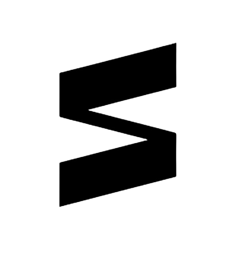

홈 > 브랜드 매거진 > 락앤락
락앤락 Lock and Lock
락앤락은 밀폐용기로 대표되는 한국의 생활용품 브랜드다. 네 면을 잠그는 결착 방식의 밀폐 기술로 주방 보관 문화를 바꾸며 성장했고, 밀폐용기를 기반으로 텀블러와 조리도구 등으로 품목을 넓혔다. 한국을 넘어 중국과 베트남을 비롯한 전 세계 시장에 제품을 공급하는 글로벌 생활용품 기업으로 자리 잡았다.
산업 분야 홈·라이프스타일 · 공개 등급 자료 기반 · 브랜드 평가 4.1 ★

한눈에 보는 브랜드
락앤락은 밀폐용기로 대표되는 한국의 생활용품 브랜드다. 네 면을 잠그는 결착 방식의 밀폐 기술로 주방 보관 문화를 바꾸며 성장했고, 밀폐용기를 기반으로 텀블러와 조리도구 등으로 품목을 넓혔다.
한국을 넘어 중국과 베트남을 비롯한 전 세계 시장에 제품을 공급하는 글로벌 생활용품 기업으로 자리 잡았다.
브랜드 관점
성공의 핵심은 네 면을 잠가 밀폐력을 끌어올린 결착 기술이었다. 누수와 냄새를 막는 기능이 입소문을 타며 대표 밀폐용기 브랜드로 올라섰다.
1994년 이후 해외로 눈을 돌려 중국을 시작으로 베트남 등 아시아 시장에 진출했고, 홈쇼핑을 비롯한 유통 채널을 통한 직접 판매로 인지도를 빠르게 넓혔다. 제조 거점도 베트남과 중국으로 확장했다.
시작과 성장
뿌리는 1978년 국진유통으로 거슬러 올라간다. 이후 국진화공을 거쳐 하나코비로 상호를 바꾸며 주방용품 제조 기반을 다졌다.
1998년 네 면을 동시에 잠그는 결착식 밀폐용기를 선보이며 누수 없는 보관이라는 강점으로 시장에서 주목받았다. 2003년에는 주력 제품명을 따 회사 이름을 락앤락으로 바꾸고 브랜드 중심 경영으로 전환했다.
브랜드 아이덴티티
브랜드의 핵심은 새지 않는 밀폐력이다. 네 면을 잠그는 결착 구조를 상징으로 삼아 신뢰할 수 있는 보관이라는 인식을 쌓았다.
실용성과 위생을 앞세운 생활밀착형 정체성으로 주방을 중심에 둔 가정용품 브랜드로 통한다.
제품과 서비스
주력은 네 면 결착식 밀폐용기로, 플라스틱과 내열 유리 등 다양한 소재로 구성된다. 여기에 트라이탄 소재를 활용한 텀블러와 보온병 등 음료 용기, 스테인리스 조리도구와 주방용품까지 품목을 넓혔다.
매년 다수의 신제품을 내놓으며 생활 전반을 아우르는 구성을 갖췄다.
현재 상태
2017년 창업주 측 지분 약 63퍼센트가 사모펀드 어피니티 에쿼티 파트너스에 매각되며 경영권이 넘어갔다. 이후 베트남과 중국 시장 성장성을 발판으로 사업 구조를 재편하며 글로벌 생활용품 기업으로 운영되고 있다.
타임라인
BI/CI 변천사
대표 로고대표 브랜드 마크자주 묻는 질문
락앤락는 어느 나라 브랜드인가요?
락앤락는 한국의 홈·라이프스타일 브랜드입니다.
락앤락의 브랜드 아이덴티티는 무엇인가요?
브랜드의 핵심은 새지 않는 밀폐력이다.
락앤락의 대표 제품은 무엇인가요?
주력은 네 면 결착식 밀폐용기로, 플라스틱과 내열 유리 등 다양한 소재로 구성된다.
락앤락는 현재 어떤 상태인가요?
2017년 창업주 측 지분 약 63퍼센트가 사모펀드 어피니티 에쿼티 파트너스에 매각되며 경영권이 넘어갔다.
락앤락의 공식 웹사이트는 어디인가요?
락앤락의 공식 웹사이트는 https://www.locknlock.com 입니다.
함께 읽을 브랜드
 홈·라이프스타일 · 자료 기반타파웨어(Tupperware)
홈·라이프스타일 · 자료 기반타파웨어(Tupperware)터퍼웨어(Tupperware)는 발명가 얼 터퍼가 폴리에틸렌 밀폐용기를 개발해 1946년 선보인 미국의 가정용 식품 보관용기 브랜드다. 가정 방문 시연 방식의 '터퍼...

홈·라이프스타일 · 자료 기반시디즈(SIDIZ)시디즈는 사무용 가구 기업 퍼시스그룹 계열의 인체공학 의자 전문 브랜드다. 장시간 앉는 환경을 전제로 한 인간공학 설계를 핵심으로 사무용 의자, 학생용 의자, 게이밍...
홈·라이프스타일 · 자료 기반영실업(Young Toys)영실업은 또봇, 시크릿쥬쥬, 콩순이로 대표되는 한국 토종 완구기업이다. 1980년 설립 이래 외국 완구를 수입하거나 주문 생산하던 단계를 넘어, 자체 캐릭터를 개발하...
OL
오롤리데이
홈·라이프스타일 · 자료 기반오롤리데이(oh, lolly day!)오롤리데이는 행복을 핵심 콘셉트로 내세운 한국 디자인·라이프스타일 브랜드다. 삶을 더 행복하게 만드는 다정한 제품을 만든다는 정체성을 내걸고 문구와 잡화를 중심으로...
 홈·라이프스타일 · 편집 검수알레시(ALESSI)
홈·라이프스타일 · 편집 검수알레시(ALESSI)알레시(Alessi)는 1921년 조반니 알레시가 이탈리아 오메냐에서 설립한 주방·생활용품 디자인 브랜드다. 금속 가공 공방에서 출발해 세계적 건축가·산업디자이너와...
 홈·라이프스타일 · 자료 기반노루페인트(Noroo Paint)
홈·라이프스타일 · 자료 기반노루페인트(Noroo Paint)노루페인트는 한국을 대표하는 종합 도료 기업으로, 광복 직후 잉크 제조에서 출발해 페인트 사업으로 확장한 80년 가까운 업력을 지닌 장수 기업이다. 건축용과 자동차보...
홈·라이프스타일 · 자료 기반말표산업(Malpyo)말표산업은 한국을 대표하는 구두약·신발용품 기업이다. 검은 말 그림 상표를 단 말표 구두약은 국산 구두약의 대명사로 자리 잡아 수십 년간 사랑받았다. 구두약을 중심으...
 홈·라이프스타일 · 자료 기반모나미(Monami)
홈·라이프스타일 · 자료 기반모나미(Monami)모나미는 볼펜을 비롯한 필기구를 중심으로 성장한 한국의 대표 문구 기업이다. 1963년 선보인 모나미 153 볼펜은 출시와 동시에 학생과 직장인에게 폭넓게 보급되며...